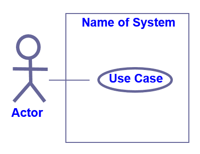

System Designs
Developing Use Case Diagrams
Use Case is a scenario (task) that conveys a software system interactions with the end user (actor) or another system by performing the functions (gaining input and output) for achieving the specific business goal in the domain context
There are 2 levels for the Use Cases:
- Business use cases (technology independent) which provides the information of
- what functions (services) are performed in a business domain context
- and how a business service being carried out is designed with Activity Diagrams
- System use cases (technology related) which provides the information of
- what functions (services) performed in a software system context
- and how the functional workflow being carried out in an application is designed with Sequence Diagrams
Software Systems Requirements are key and include:
- Functions requirements specifies the behaviour of a software system.
- Non-Functional aspects generally describe the non-functional requirements terms.
Use Case Diagrams
- The system boundary defines the scope of the system, what the system does but not how it does it.
- Use-cases describes a set of sequences of actions, which include variants that the system performs to yield an observable value to an actor
- Actor represents the role that someone might be playing (not a particular individual). These are external entities that has an interest in interacting with the system
- Interaction is a form of interaction between the actor and a use case. 
Below a Use Case Description is presented. There are explanations of what to include for each of the titles.

Below are the different types of relationship notation that can be used in a Use Case diagram
| 1. Association |
|---|
 |
| 2. Include: can only occur between two use cases |
 |
| 3. Extent: can only occur between two use cases |
| 4. Generalisation |
 |